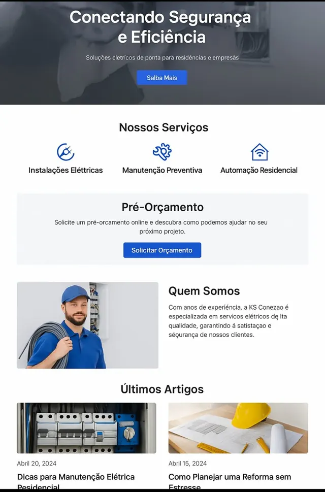

Control Tower · Hub Performance
Performance dashboard for 4 last-mile hubs, used by executive leadership. Python ETL streaming 300–400 MB files → PostgreSQL → Power BI, with 30M+ records.
> hi, I'm
Data Analyst
I turn operational data into decisions. I build Python ETL pipelines, PostgreSQL databases and Power BI dashboards for last-mile logistics operations, in a bilingual Portuguese/Chinese environment.
// about me
I'm Samuel, 23, from Osasco – São Paulo, Brazil, and I'm studying Computer Science at Anhembi Morumbi University. I started in tech through infrastructure, with a technical degree in Networking from ITB Prof. Munir José, and today I work as a Mid-level Data Analyst in a high-volume logistics operation.
My work is end to end: I extract and clean data with Python, organize it all in PostgreSQL and deliver Power BI dashboards built on the operation's business rules (SLA, on-time rate, backlog, returns). I like automating repetitive work and making sure the numbers that reach the board are right. I use generative AI daily to speed up automations, review analyses and generate insights and KPIs for dashboards, always without exposing sensitive data.
My infrastructure background gives me a hybrid profile: I understand the server, the network and the business, and I work well with all of those sides.
Last-mile logistics · ETL, PostgreSQL, Power BI, PT/ZH reports
Freight carrier · R$ 50k saved on pricing, TMS (SSW), Microsoft 365/Teams and dashboards
Retail · cash, purchasing, receiving and inventory
Anhembi Morumbi · Networking Technician – ITB (2021)
// projects
Corporate dashboards are shown with information hidden for confidentiality.
Performance dashboard for 4 last-mile hubs, used by executive leadership. Python ETL streaming 300–400 MB files → PostgreSQL → Power BI, with 30M+ records.
Tracks overnight route departures and pinpoints the bottleneck behind each delay: dock, loading or release. Google Sheets source, bilingual PT/ZH title.
Monitors at-risk packages, amounts involved and owners at each stage, with region and customer filters to act before a loss happens.
Redesign of the reverse-logistics dashboard. I fixed an ETL filter that was discarding ~63% of valid records and restored trust in the metric.

Website for an electrical installation company, with a customer area, quote requests, a blog and an admin panel.
Script that detects connected USB devices, logs them and sends an alert with a screenshot via Telegram.
Spreadsheet automated with Python and a Looker Studio dashboard to track income, expenses and goals.
Executable for diagnosing and optimizing Windows 10/11, used in maintenance jobs. In development.
USB drive with several ISOs (Windows and Linux), set up with Ventoy and a custom theme for installs and recovery.
// gallery
Text, numbers and logos hidden (LGPD privacy law and confidentiality). Click to enlarge.
// stack
// I also work as
Preventive maintenance, formatting and optimization of laptops and desktops, network printer setup and tech support. Available on Saturdays and some weekdays after 7 p.m., with a 30-day warranty.
// contact
Open to opportunities in data, BI and data engineering.